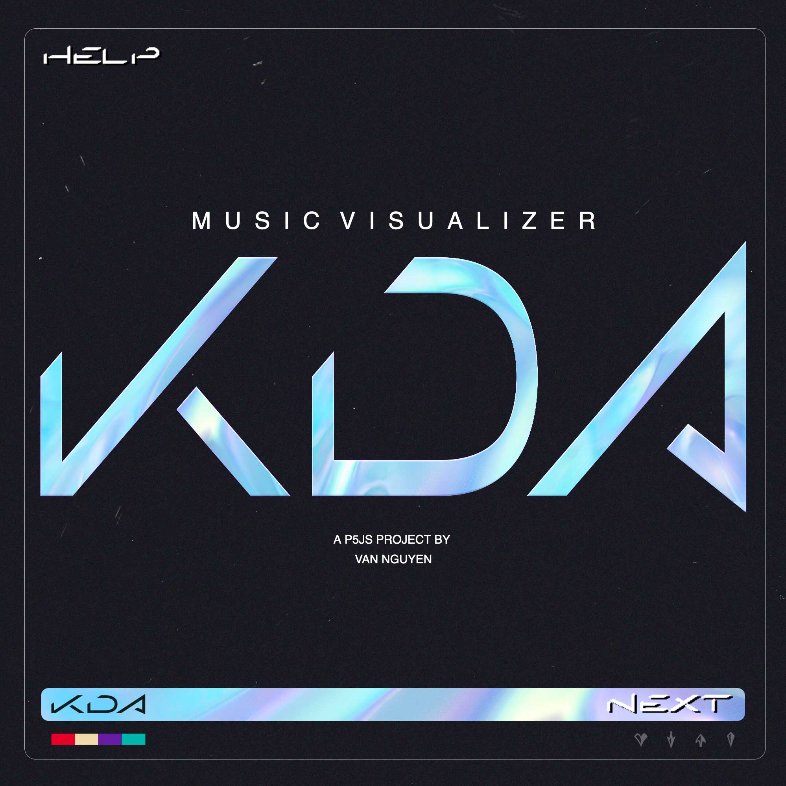
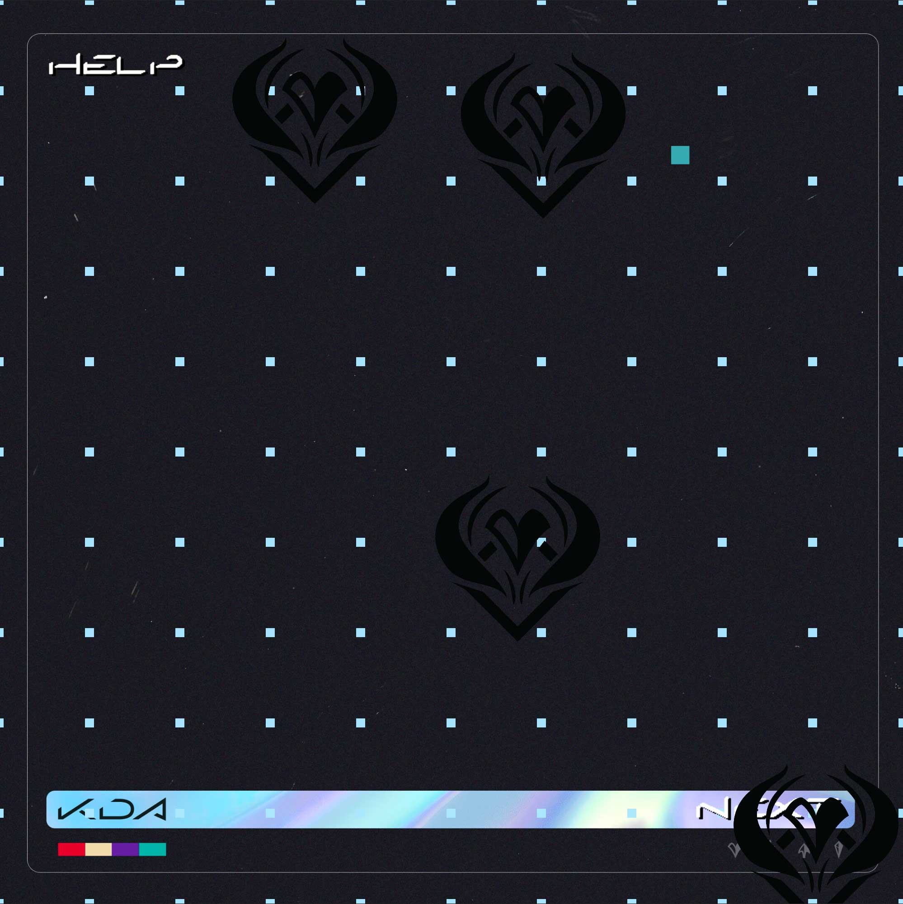
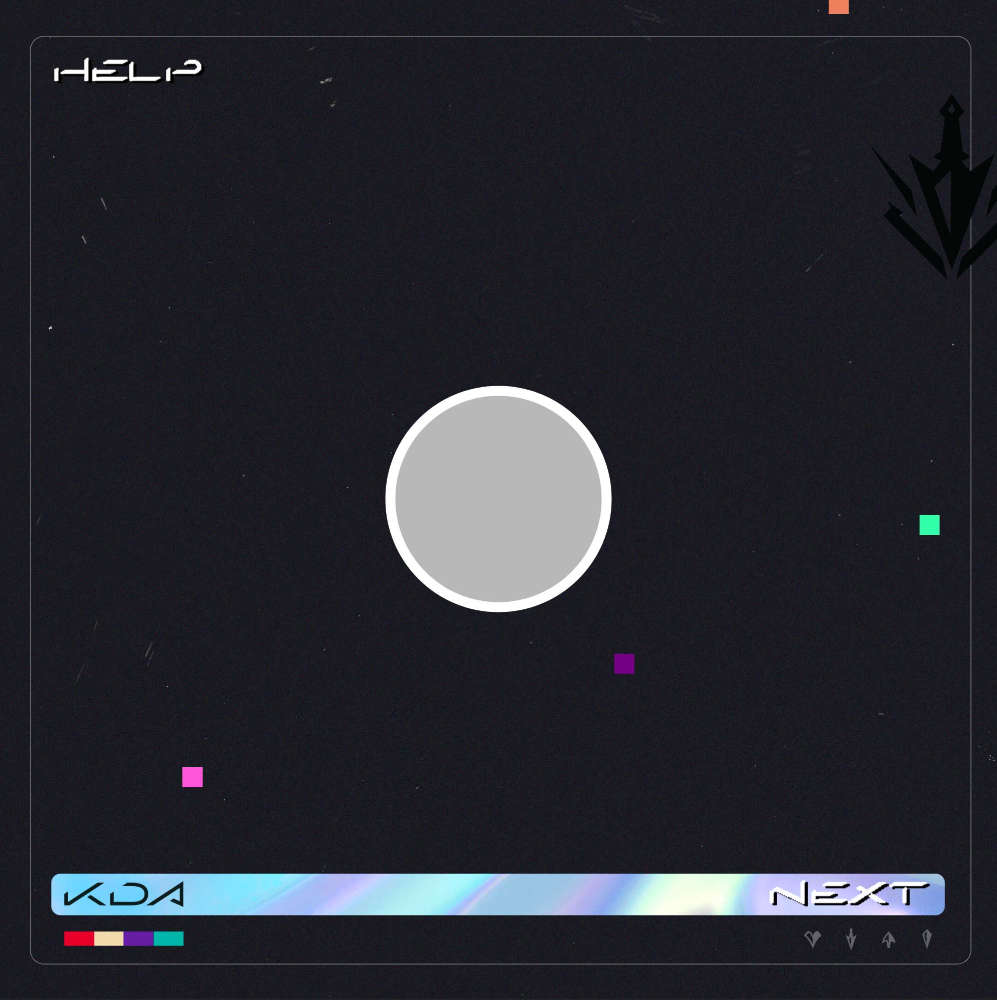
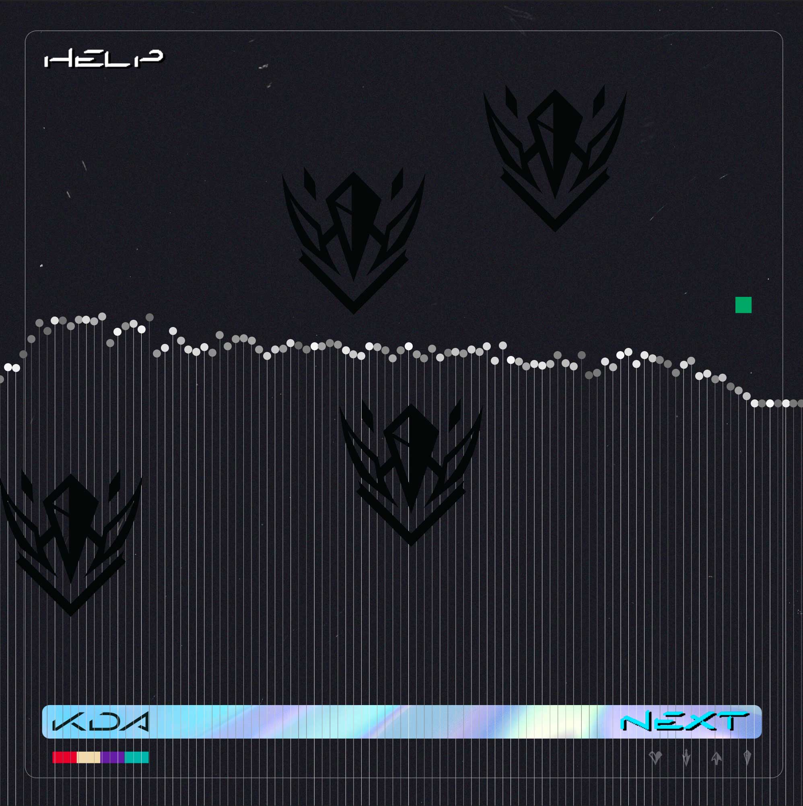
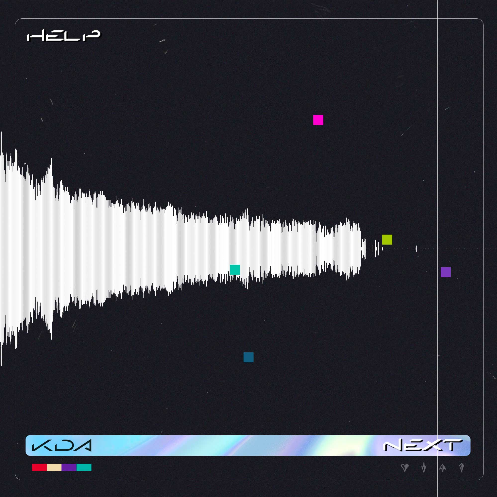
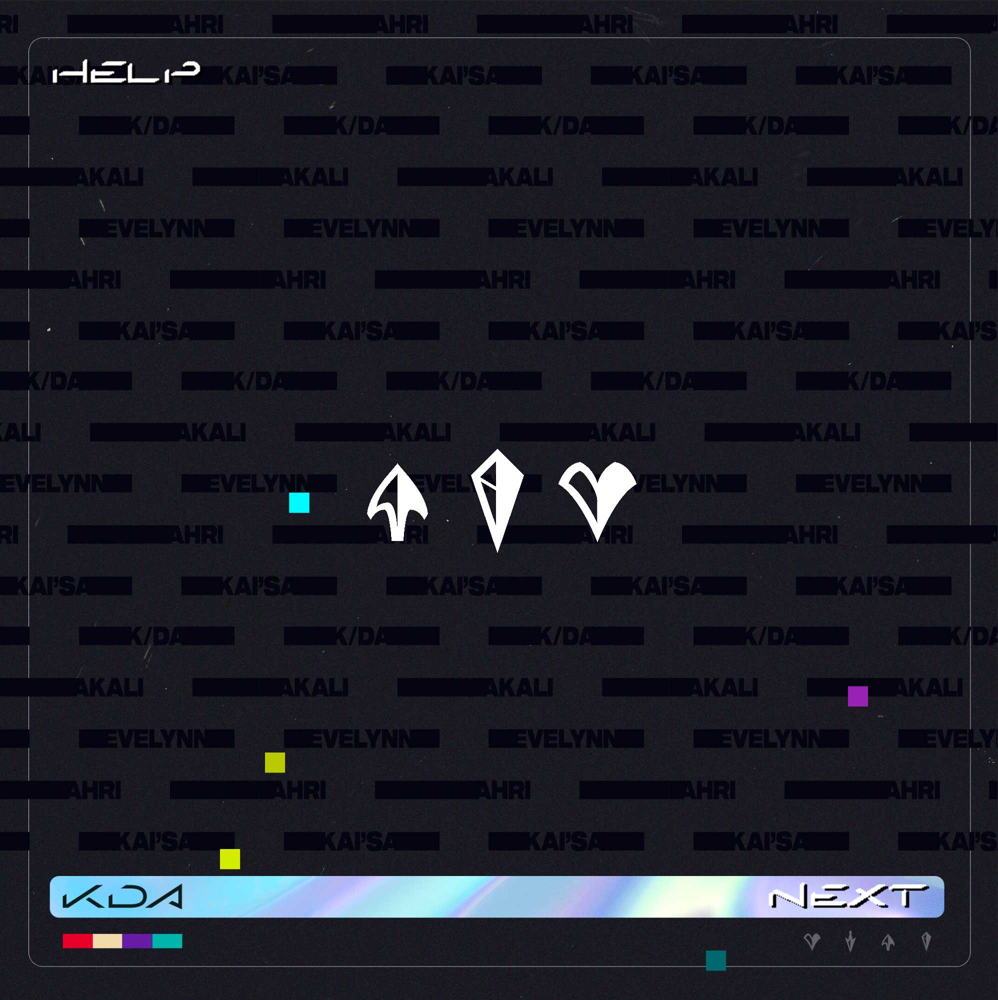
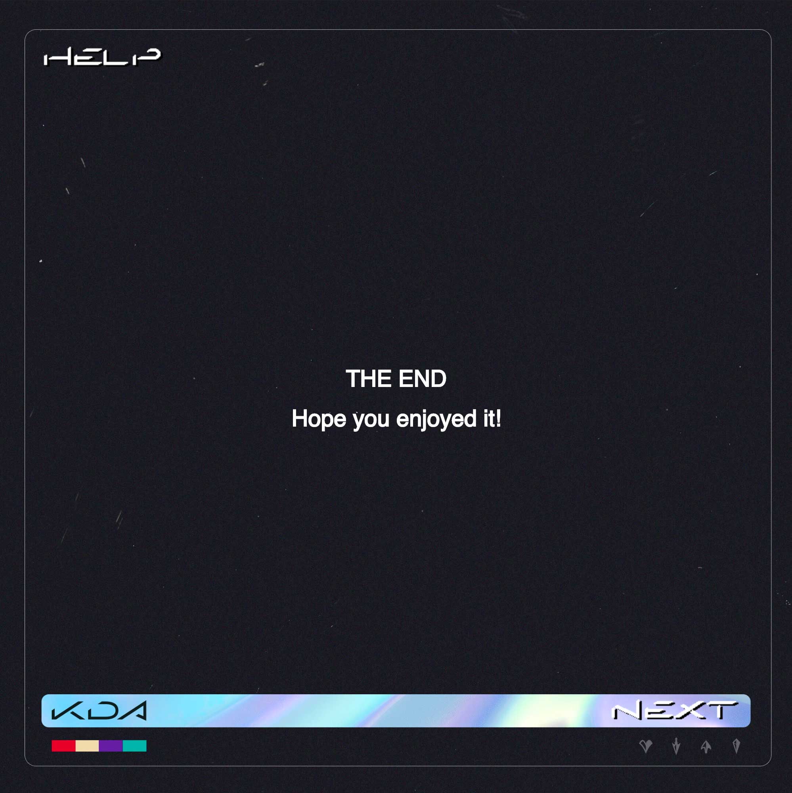
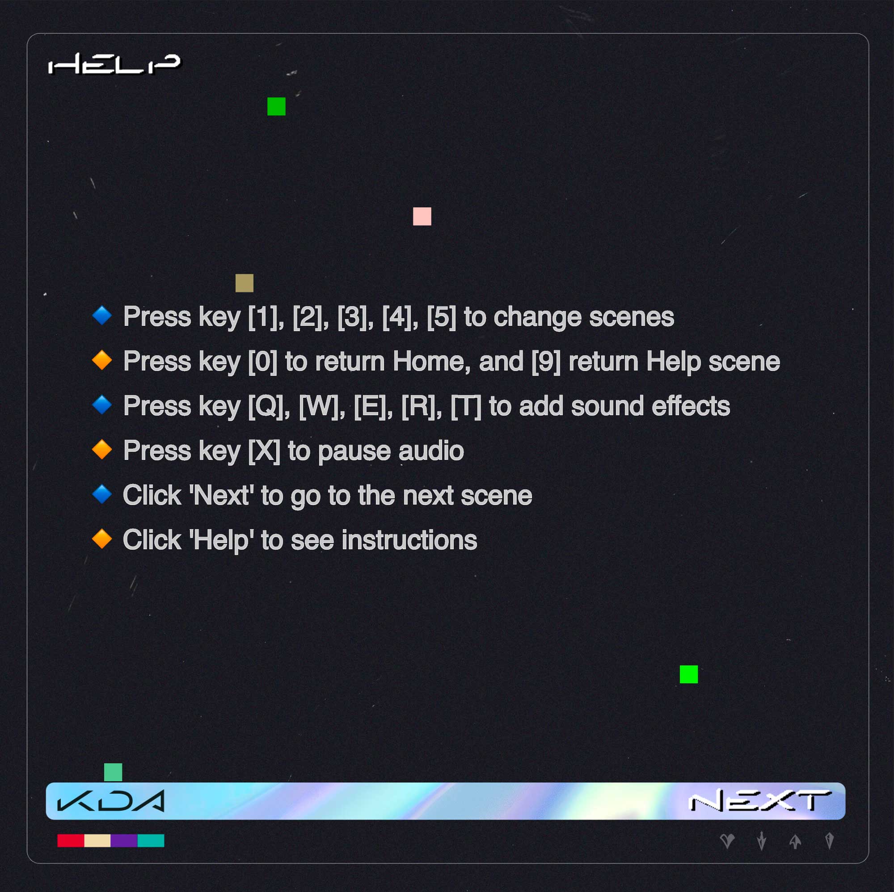

This is my final project for ART101 Creative Coding class, I created a visualizer for the song "The Baddest" performed by the virtual Kpop girl band named K/DA, which is from the famous game League of Legend by Riot Games. I believe that each waveform or instrumental track has its own visual aesthetic, and that it can be visualized in many different ways. By connecting the waveform of sound to visual properties such as shape, position, scale, color, opacity, an audio that no one thought they could never see but listen to now appears to have characters. In my project, I splitted the song into individual layers of soundtracks, for example: drum, bass, synth, vocals, etc. Then, I map each amplitude to different visual properties, so that each scene has a unique representation for a specific instrumental layer. I also cut some short samples that are used in the track to make some add-on sound effects, and created animations for them. I hope users/ players can learn more about sound design and have fun playing around with the instrumental tracks.
CREDITS:
- JavaScript library: P5.JS
- Creator: Van Nguyen (it's me!)
- Song: The Baddest" - K/DA ft. ft. (G)I-DLE, Bea Miller, Wolftyla
- Visual assets: Riot Games' K/DA Official Fan Club
- No copyright infringement intended
- Noncommercial use. (More about Riot Games' Legal Jibber Jabber Terms and
Policies here)
Special thanks to Professor Steve Durie, and Raymond Lam for helping me making this project possible.
see Proposal & Wire Frames
see sketch.js code
see scenes.js code
Scenes preview:
       